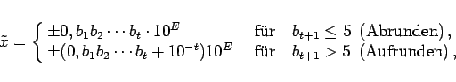

Inhalt Index DeskTop Bronstein

 Numerische Mathematik Nutzung von Computern Numerische Probleme beim Rechnen auf Computern Normalisierte Dezimalzahlen und Rundung
Numerische Mathematik Nutzung von Computern Numerische Probleme beim Rechnen auf Computern Normalisierte Dezimalzahlen und Rundung


Jede reelle Zahl  läßt sich als Dezimalzahl in der Form
läßt sich als Dezimalzahl in der Form
darstellen. Dabei wird als Mantisse bezeichnet, die aus den Ziffern gebildet wird. Die Zahl E ist eine ganze Zahl, der sogenannte Exponent zur Basis 10. Wegen bezeichnet man (19.243) als normalisierte Dezimalzahl.
Da in einem realen Computer nur mit endlich vielen Ziffern gearbeitet werden kann, muß man sich auf eine feste Zahl t von Mantissenziffern und auf einen festen Wertebereich für den Exponenten E beschränken. Dadurch wird aus der Zahl x gemäß (19.243) durch Rundung, wie sie beim praktischen Rechnen üblich ist, die Zahl
|  | (19.267) |
d.h., für den durch Rundung verursachten absoluten Fehler gilt:
| (19.268) |